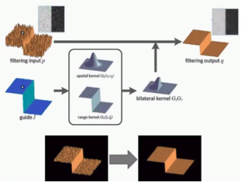

边缘保留滤波（Edge Preserving Filter）可以达到美颜的效果
实现边缘保留滤波的方法有很多种，比如：高斯双边滤波、均值迁移滤波等
原理图

高斯双边滤波
首先导入需要的库
1 | import cv2 as cv |
1 | # 高斯双边滤波 |
高斯双边滤波函数：bilateralFilter()
定义：
bilateralFilter(src, d, sigmaColor, sigmaSpace, dst=None, borderType=None)src：原图像(Source 8-bit or floating-point, 1-channel or 3-channel image)
d：像素的邻域直径，可有sigmaColor和sigmaSpace计算可得(Diameter of each pixel neighborhood that is used during filtering. If it is non-positive, it is computed from sigmaSpace.)
sigmaColor：颜色空间的标准差，一般尽可能大(Filter sigma in the color space)
sigmaSpace：坐标空间的标准差(像素单位)，一般尽可能小(Filter sigma in the coordinate space)
均值迁移滤波
1 | # 均值迁移滤波 |
均值迁移滤波函数：pyrMeanShiftFiltering()
- 定义：
pyrMeanShiftFiltering(src, sp, sr, dst=None, maxLevel=None, termcrit=None) - src：原图像(The source 8-bit, 3-channel image)
- sp：空间窗的半径(The spatial window radius)
- sr：色彩窗的半径(The color window radius)
测试上面几个函数
1 | if __name__ == '__main__': |
运行结果
- input image（原图）

- bi_demo
- mean_shift

结果分析
可以看出对图像的边缘处理的很好，右上角的字没有模糊掉
高斯双边滤波感觉更适合做美颜效果
而均值迁移滤波处理后的图片感觉有些涂抹感，像油画一样
图像边缘是指图像属性区域和另一个属性区域的交接处，是区域属性发生突变的地方，是图像不确定性最大的地方，也是图像信息最集中的地方，图像的边缘包含着丰富的信息